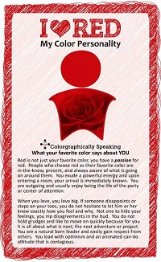
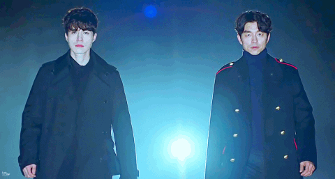

Hey Look!


Favorites
Hi! Hello! Thank you for exploring on my web page! I will be sharing to you my favorites from my favorite colors to other things. I hope you could relate with me after reading this. First of all I want to share with you that red is my favorite color, for me red symbolizes power, bravery and love. I have read an article stating that our favorite color reflects our personality; according to colorgraphic, people who loves red is a passionate person, they exude powerful energy where your presence can easily be feel by others. People who loves red loves a lot, they are very expressive; they do not hold grudges and likes to move on quickly because they always look forward on what is next. They love adventure and lead people with optimism. Most of these are true to me especially being expressive.
Second, my favorite flower is buckwheat and tulips. I love tulips because it symbolizes love and respect, it really touches me when someone gives me a tulip flower. I recently discovered buckwheat flower when I was watching a Korean drama entitled Goblin, buckwheat flowers for me means infinity because of its tiny petals which you cannot count.
Third, I would like you to know that Kuroko no Basket and Kataekyo Hitman Reborn are my favorite anime among all animes I've already watch since my childhood days. Funny fact is that I re-watched those two animes a couple of times but I never feel "sawa" on watching these two. Even though Hitman Reborn has 204 episodes.Lastly, I want to share to you that I have lots of Korean Drama favorites because almost all of their dramas are very relatable and heartfelt. I started watching Korean drama last January of this year and I've already finished 17 dramas. The list of the Korean Drama I have finished are enumerated follows: Descendants Of The Sun, Legend of the blue sea, Cinderella and the 4 knights, Love in the moonlight, Scarlet heart, Dream high, Secret garden, My love from the star, Goblin, Weight lifting fairy Kim Bok Joo, Life of Kang Chi, Oh my Venus, My girlfriend is a gumiho, Queen In Hyun's man, My shy boss, Oh my ghost, and 7 first kisses.
This anime is entitled Kuroko no Basket, this is about Kagami who loves to play basketball, wanting to beat the other 5 prodigies in basketball, the Generation of Miracles: Kise, Midorima, Aomine, Murasakibara, and Akashi by the help of the 6th phantom man Kuroko. This anime shows the value of friendship and teamwork that inspires me.
 This drama is entitled Goblin, a story about a warrior on the Georyo era punished by the deity that only his bride can remove the sword from his chest so that he could die and be in peace. After 900 years of searching, he found her bride but things does'nt go well with what he originally planned he learned to love his bride and sacrificed his life for his love but in the end his bride still die but she reincarnated to continue their love.